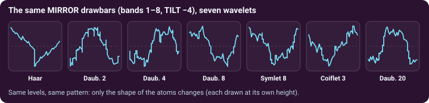
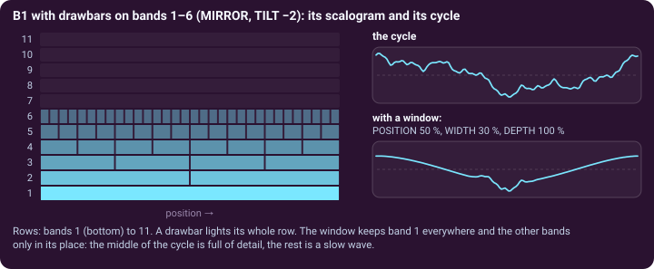

Additive synthesis with wavelets · page 2 of 3 · oscillator B1
Atoms, scalogram and window
The bars say how loud each band is. The wavelet says what a band is made of, and the window says where in the wave it sounds.
The wavelet: what a band is made of
B1 has its own WAVELET selector and its own ATOM SHAPE display, separate from A1 and A2: the three oscillators can use three different wavelets. With the same pattern and the same bars, the choice changes the shape of every band's atoms, and so the shape of the wave. Haar builds the wave from blocks, the long wavelets from rounded ripples.

Seeing the sound: scope and scalogram
The SCOPE · ALL OSCILLATORS card draws one cycle of the whole mix, and under it the SCALOGRAM draws the bands as rows, band 1 at the bottom and band 11 at the top, with the places in the cycle as columns. A bright cell is a loud atom. For B1 a bar up lights its row and a bar at 0 leaves it dark (with the IMPULSE pattern only the first cell of a row lights; with RANDOM the cells vary). The scalogram moves with the sound: the band envelopes and the filter change its rows while the note plays.
The scale filter and the window on B1
B1 has its own SCALE FILTER with the same controls as the subtractive oscillators (page 2 of Subtractive): TYPE, CUTOFF, SLOPE, RESO, KEY TRK, ENV AMT, VEL AMT. The band gain is the product of the bar, the tilt, the band envelope and the filter, so you can set a tone with the bars and let the filter, an envelope or an LFO open and close it on top.
The POSITION window works differently from the subtractive one, because B1 has no unfiltered wave to fall back on. Band 1 plays everywhere; the other bands play only inside the window (DEPTH 100 %). A narrow window is a spotlight: the detail of the sound is heard only in one part of the cycle, and LFO 1 (its POSITION knob) or LFO 2/3 can move it along. With DEPTH at 0 (the default) the window is off.

Two more things the LFOs can do to B1
The targets of LFO 2 and LFO 3 include Tilt, Odd Bars, Even Bars and Scale Sustain. Odd Bars and Even Bars add to the drawbars of the odd bands (1, 3, 5 …) and of the even ones: one LFO on each, in opposite directions, can make the two groups of bands trade places, a slow organ phasing.
Try it. Load B · Focus Sweep (Haar, a window 30 % wide at full depth, moved by LFO 1) and listen to the detail travelling round the cycle. Then switch to B · Choir Pad (an ATTACK of 1 s, SPREAD +0.5) and watch the scalogram fill from the bottom up.